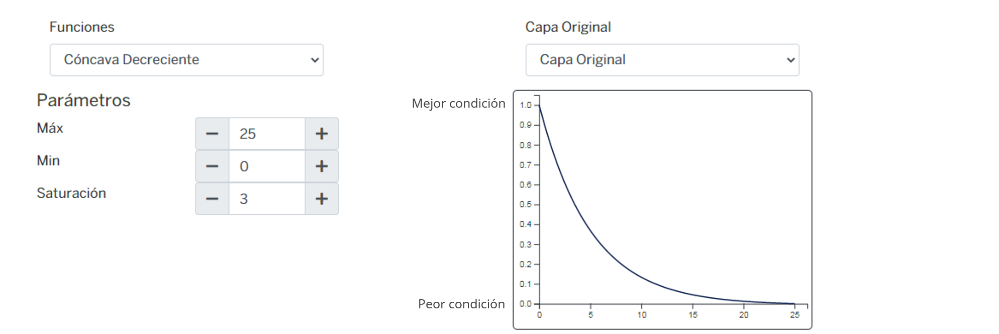
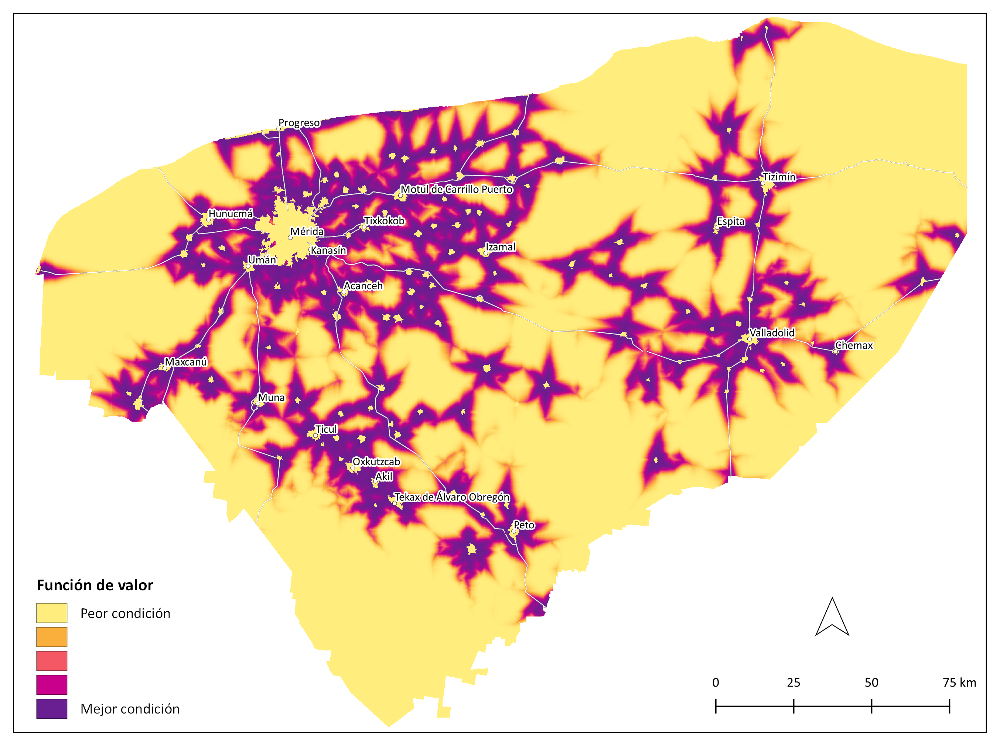
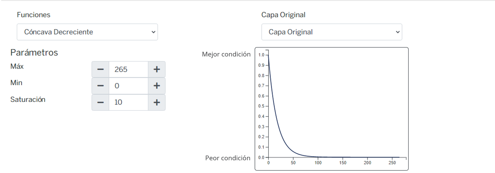
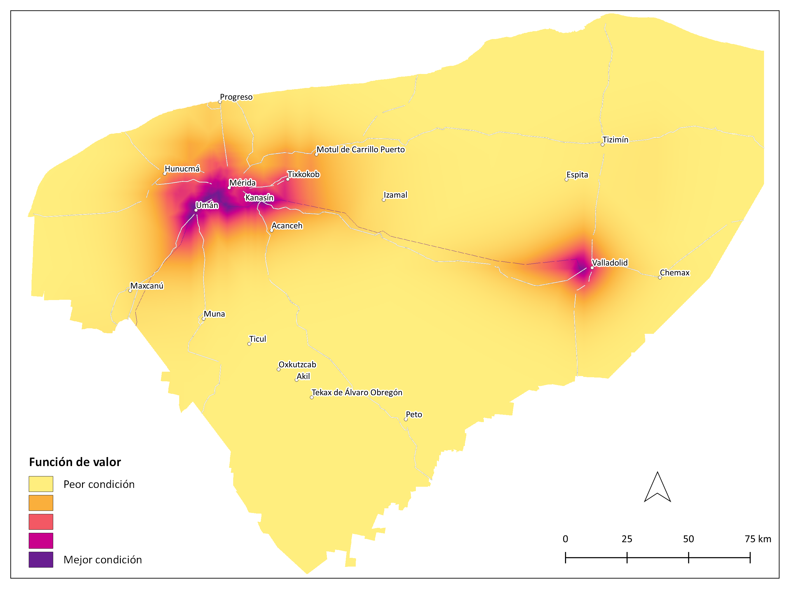
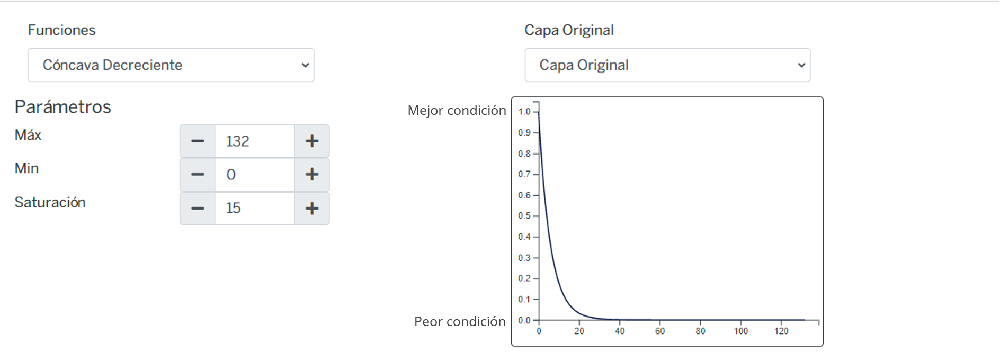

Energía¶
Meta¶
Consolidar al Estado de Yucatán como productor de energía limpia y confiable para asegurar la suficiencia energética mediante criterios de uso sostenible del territorio, certidumbre jurídica y desarrollo ordenado e incluyente del sector, que permitan aprovechar los recursos para crear un valor económico, ambiental y social.
Subsectores¶
Energía industrial¶
Fuentes de energía a escala industrial.
Modelo AHP del subsector energía industrial

Fuentes¶
Energía industrial¶
| Criterio | Definición |
|---|---|
| Hidrocarburos líquidos | Consumo y almacenamiento de hidrocarburos líquidos. Plantas que utilizan diesel o combustóleo para generar energía. Terminales de almacenamiento y reparto. |
| Gas natural | Transporte de gas natural por gasoductos y vehículos terrestres. Terminales de almacenamiento y centrales eléctricas. Uso de gas comprimido por empresas. |
| Solar | Instalaciones industriales que aprovechan la irradiación solar como fuente de energía. |
| Eólica | Instalaciones de generación de energía, mayores a 0.5 MW. |
| Biomasa | Proyectos diseñados que utilizan material biológico, para conversion en energía utilizable. Incluye los desechos de granjas porcícolas para producir energía eléctrica. |
Hidrocarburos líquidos¶
Consumo y almacenamiento de hidrocarburos líquidos. Plantas que utilizan diesel o combustóleo para generar energía. Terminales de almacenamiento y reparto.
| Atributos | Definición |
|---|---|
| Carreteras | Distancia a carreteras. |
| Localidades | Distancia a asentamientos humanos. |
Carreteras¶
Distancia a carreteras.
Insumos
| Capa | Distancia a carreteras |
|---|---|
| Fuente | Red Nacional de Caminos (RNC) Red vial - INEGI |
| Año | 2019 |
| Escala | Sin dato |
| Unidades | Kilómetros |
Parámetros de la función de valor

Función de valor de carreteras
Localidades¶
Distancia a asentamientos humanos.
Insumos
| Capa | Distancia a localidades |
|---|---|
| Fuente | [1] Polígonos de localidades. Marco Geoestadístico. Censo de Población y Vivienda INEGI y [2] Red Nacional de Caminos (RNC) Red vial - INEGI |
| Año | [1] 2020; [2] 2019 |
| Escala | Sin dato |
| Unidades | Kilómetros |
Parámetros de la función de valor

Función de valor de localidades

Gas natural¶
Transporte de gas natural por gasoductos y vehículos terrestres. Terminales de almacenamiento y centrales eléctricas. Uso de gas comprimido por empresas.
| Atributos | Definición |
|---|---|
| Distancia del gasoducto a zonas industriales | Zonas industriales que demandan gas natural. |
| Distancia del gasoducto a localidades | Distancia a asentamientos humanos. |
Distancia del gasoducto a zonas industriales¶
Zonas industriales que demandan gas natural.
Insumos
| Capa | Distancia del gasoducto a los parques industriales |
|---|---|
| Fuente | [1] ?; [2] Gasoductos GeoComunes |
| Año | [1] ?; [2] 2020 |
| Escala | [1] ? ; [2] Sin dato |
| Unidades | Kilómetros |
Parámetros de la función de valor

Función de valor de distancia del gasoducto a zonas industriales

Distancia del gasoducto a localidades¶
Distancia a asentamientos humanos.
Insumos
| Capa | Distancia de localidades al gasoducto |
|---|---|
| Fuente | [1] Polígonos de localidades. Marco Geoestadístico. Censo de Población y Vivienda INEGI y [2] Gasoductos GeoComunes |
| Año | 2020 |
| Escala | Sin dato |
| Unidades | Kilómetros |
Parámetros de la función de valor

Función de valor de distancia del gasoducto a localidades
Solar¶
Instalaciones industriales que aprovechan la irradiación solar como fuente de energía.
| Atributos | Definición |
|---|---|
| Distancia a red eléctrica | Distancia a líneas de transmisión y subestaciones. |
| Cobertura | Tipo de vegetación. |
| Tenencia | Áreas ejidales (comunitaria o parcelada) y no ejidales. |
Distancia a red eléctrica¶
Distancia a líneas de transmisión y subestaciones.
Insumos
| Capa | Distancia líneas de transmisión de energía eléctrica |
|---|---|
| Fuente | Líneas de transmisión en México. GeoComunes con datos de CFE |
| Año | 2010 |
| Escala | Sin dato |
| Unidades | Kilómetros |
Parámetros de la función de valor

Función de valor de distancia a red eléctrica
Cobertura¶
Tipo de vegetación.
Insumos
| Capa | Uso del suelo y vegetación |
|---|---|
| Fuente | Conjunto de datos vectoriales de la carta de Uso del suelo y vegetación. Serie VI. Conjunto Nacional INEGI |
| Año | 2017 |
| Campo | descripcio |
| Escala | 1:250,000 |
| Unidades | Adimensional |
Parámetros de la función de valor
| ID | Cobertura | fv |
|---|---|---|
| 2 | Agricultura de riego | 1.00 |
| 3 | Agricultura de temporal | 1.00 |
| 5 | Bosque cultivado/Palmar inducido | 1.00 |
| 8 | Pastizal | 1.00 |
| 11 | Sin vegetación | 1.00 |
| 4 | Asentamiento humano | 0.70 |
| 9 | Selva baja | 0.56 |
| 10 | Selva mediana | 0.56 |
| 12 | Sábana | 0.33 |
| 1 | Acuícola | 0.00 |
| 6 | Cuerpo de agua | 0.00 |
| 7 | Manglar | 0.00 |
| 13 | Tular | 0.00 |
| 14 | Vegetación de duna costera | 0.00 |
| 15 | Vegetación de petén | 0.00 |
| 16 | Vegetación halófila hidrófila | 0.00 |
| 17 | ND | 0.00 |
Función de valor de cobertura

Tenencia¶
Áreas ejidales (comunitaria o parcelada) y no ejidales.
Insumos
| Capa | Tenencia de la tierra |
|---|---|
| Fuente | [1] Zonas de Tierras Parceladas y [2] Tierra de uso común |
| Año | 2020 |
| Escala | Sin dato |
| Unidades | Adimensional |
Parámetros de la función de valor
| ID | Categoría | FV |
|---|---|---|
| 3 | No ejidal | 0.58 |
| 2 | Zona de tierras parceladas | 0.31 |
| 1 | Tierra de uso común | 0.11 |
Función de valor de tenencia

Eólica¶
Instalaciones de generación de energía, mayores a 0.5 MW.
| Atributos | Definición |
|---|---|
| Densidad | Densidad de potencial eólica a diferentes alturas, determina sitios ideales para colocar dispositivos de conversión de energía eólica a eléctrica. |
| Velocidad | Velocidad del viento, determina sitios ideales para colocar dispositivos de conversión de energía eólica a eléctrica. |
Insumos
| Capa | Parques eólicos |
|---|---|
| Fuente | Parques eólicos en México. GeoComunes |
| Año | 2020 |
| Escala | Sin dato |
| Unidades | Adimensional |
Densidad¶
Densidad de potencial eólica a diferentes alturas, determina sitios ideales para colocar dispositivos de conversión de energía eólica a eléctrica.
| Atributos | Definición |
|---|---|
| Densidad a 30 m | Densidad de potencia eólica a 30 metros. |
| Densidad a 50 m | Densidad de potencia eólica a 50 metros. |
| Densidad a 80 m | Densidad de potencia eólica a 80 metros. |
| Densidad a 120 m | Densidad de potencia eólica a 120 metros. |
Velocidad¶
Velocidad del viento, determina sitios ideales para colocar dispositivos de conversión de energía eólica a eléctrica.
| Atributos | Definición |
|---|---|
| Velocidad a 30 m | Velocidad del viento a 30 m de altura. |
| Velocidad a 50 m | Velocidad del viento a 50 m de altura. |
| Velocidad a 80 m | Velocidad del viento a 80 m de altura. |
| Velocidad a 120 m | Velocidad del viento a 120 m de altura. |
Aprovechamiento actual de energía industrial¶
Insumos
| Capa | [1] Centrales eléctricas de combustóleo y de gas; [2] Poliducto Progreso - Mérida; [3] Gasoducto; [4] Parques solares y [5] Parques eólicos |
|---|---|
| Fuente | [1] Mapas de Infraestructura Energética y Recursos Renovables SENER; [2] Infraestructura Nacional de Almacenamiento y Transporte por Ducto de Petrolíferos; [3] Gasoductos GeoComunes; [4] Parques solares en México GeoComunes; [5] Parques eólicos en México GeoComunes |
| Año | [1] 2016; [2] ?; [3], [4], [5] 2020 |
| Escala | [1], [3], [4], [5] Sin dato; [2] ? |
| Unidades | Adimensional |
Biomasa industrial¶
Proyectos diseñados que utilizan material biológico, para conversion en energía utilizable. Incluye los desechos de granjas porcícolas para producir energía eléctrica.
| Atributos | Definición |
|---|---|
| Cultivos | Cultivos especializados, destinados a la producción biocombustibles líquidos bioetanol y biodiesel. |
| Residuos urbanos | Biomasa de origen urbano procedente de las actividades urbanas cotidianas. Incluye sitios de disposición final de residuos sólidos urbanos y a los influentes de plantas de tratamiento de aguas residuales. |
| Residuos vegetales | Biomasa agrícola y forestal. Incluye los residuos que se generan durante la cosecha de los principales cultivos. Los residuos forestales incluyen los centros de transformación y almacenamiento de recurso maderero con permiso vigente para el aprovechamiento y transporte de la madera. |
| Tala sustentable | Material vegetal producto de la tala sustentable, con potencial para generación de energía. |
Energía comunitaria¶
Fuentes de energía utilizadas en las comunidades.
| Criterio | Definición |
|---|---|
| Biomasa comunitaria | Uso de leña y carbón vegetal como combustible. |
| Eólica comunitaria | Generación de energía en las comunidades, a través de la energía del viento. |
| Solar comunitaria | Generación distribuída de energía en las comunidades, a través de la energía solar. |
Biomasa comunitaria¶
Uso de leña y carbón vegetal como combustible.
Eólica comunitaria¶
Generación de energía en las comunidades, a través de la energía del viento.
Solar comunitaria¶
Generación distribuída de energía en las comunidades, a través de la energía solar.